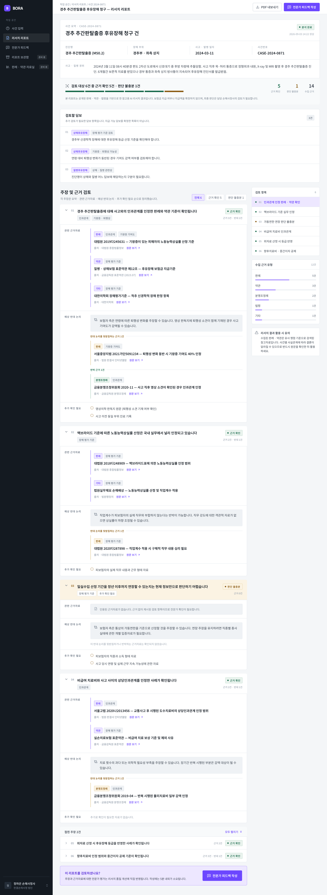
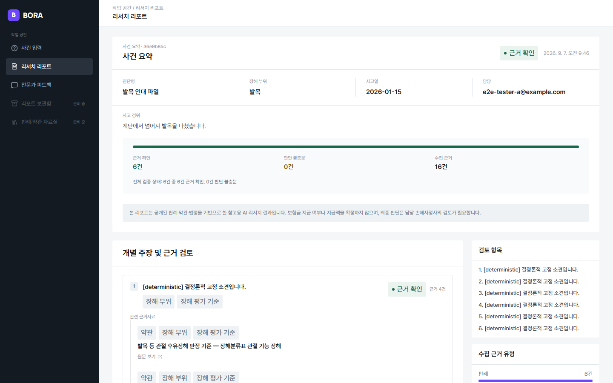

| viewport | 1440×900 (Pencil은 2x export, 실측 CSS 환산 1440×900 상당) |
|---|---|
| commit SHA | Round 5 작업 브랜치 HEAD — 최종 커밋 SHA는 sync 시 backfill |
| route | /cases/<caseId> (인증된 테스터 세션) |
| scroll 위치 | top-of-page (fullPage 아님, 뷰포트 상단 고정 캡처) |
| 데이터 fixture | `e2e/capture-evidence.spec.ts` "계단에서 넘어져 발목을 다쳤습니다." / 진단명 "발목 인대 파열" / 부위 "발목" / 사고일 2026-01-15 — 결정론적 provider 하에서 실제 evidence가 매칭돼 VERIFIED claim이 확보되는 것이 확인된 입력. Pencil의 mock 리포트와 claim 개수·근거 개수가 1:1로 일치하지는 않는다(Pencil은 정적 mock, After는 실제 파이프라인 결과이므로 완전 동일화는 불가능 — 화면 구조/카드 배치 비교가 목적). |
| 측정한 주요 차이 |
|
| 의도적 편차 | 없음(이번 라운드 신규 수정 없음) |